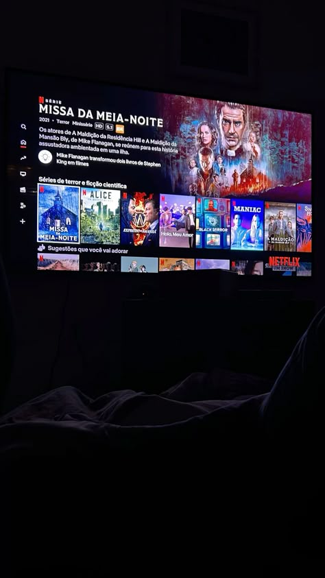
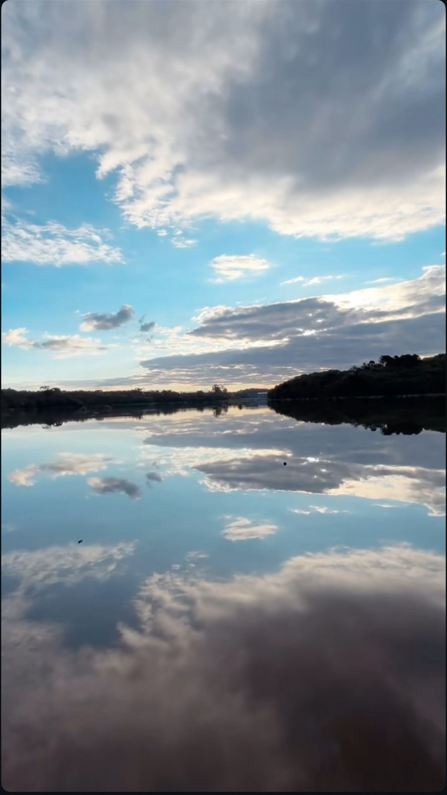

Biografia
Christian Yukio de Oliveira Takahashi
Estudante de Engenharia de Software na Universidade Estadual de Maringá, apaixonado por buscar + soluções
que fazem sentido na prática.
Gosto de transformar ideias em projetos reais, unindo lógica,
organização e um pouco de criatividade.
Atualmente, foco meus estudos em
desenvolvimento e estruturação de dados, sempre buscando entender
não só o "como", mas o "porquê" por trás de cada solução.
Fora dos estudos curto sair para
socializar e colocar o papo em dia, maratonar filmes de investigação criminal e me aventurar em trilhas
que
levam a horizontes de tirar o fôlego, sempre com a câmera em punho pra registrar as paisagens
pelo caminho.
Formação Acadêmica
Graduando na Universidade Estadual de Maringá
Curso: Engenharia de Software
Período atual: 4 Semestre
Previsão de conclusão no ano de 2029
Matérias que mais
gostei ou que estou mais gostando são: Banco de Dados, Programação Orientada a Objeto, Programação
Web, Análise e Projeto de Software e Organização e Recuperação de Dados
.
Projetos
Práticas Reais
Aqui estão alguns projetos que tenho feito durante esse período de faculdade.
Automação ordem de compra
Solução de um problema que era manual e repetitivo se tornou automático e sem erros.
Ver no GitHub

Portfólio Web
Primeiro projeto de web, estou tendo aula de Programação web neste semestre, então decidi fazer esse portifólio na intenção de praticar. Inclusive é esse site que você esta vendo kkkkkk.
Ver no GitHubNasa Space apps
24 horas. Uma ideia. Um time. E um desafio gigante. Tive a oportunidade de participar do NASA Space Apps Challenge, um hackathon intenso onde tivemos apenas um dia para sair do zero e desenvolver uma solução completa. Nossa solução foi o “Predict-ON”
Ver no LinkedInInoova Agro
Primeiro hackathon que eu participei, o tema era ajudar um pequeno produtor com a tecnologia. A nossa ideia foi o “Caderno Verde”, um chatbot no WhatsApp pensado para ajudar pequenos produtores a registrarem informações do dia a dia de forma simples
Ver no LinkedInClínica Médica
Projeto desenvolvido em grupo para a disciplina de Programação Orientada a Objetos: um sistema de gestão para clínica médica em Java, com operações completas de CRUD (criar, ler, atualizar e excluir).
Ver no GitHubFora das telas
Photograph
Minha vida fora das telas em fotos.

